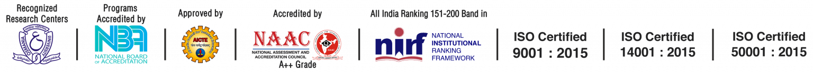

ABOUT CBIT

-
CHAITANYA BHARATHI INSTITUTE OF TECHNOLOGY, established in the Year
1979, esteemed as the Premier Engineering Institute in the States of
Telangana and Andhra Pradesh, was promoted by a Group of Visionaries
from varied Professions of Engineering, Medical, Legal and Management,
with an Objective to facilitate the Best Engineering and Management
Education to the Students and contribute towards meeting the need of
Skilled and Technically conversant Engineers and Management
Professionals, for the Country that embarked on an Economic Growth Plan.
-
The Institute, committed to Education and Innovation, started with
three-Degree Courses in Engineering for 200 Students and over the 44
Years, has emerged as a Dream Destination for; Students seeking to excel
in Engineering and Management Education, Teaching Community to progress
with a rewarding Career and Corporates to source well-rounded Engineers.
-
Stringent Academic Standards, Industry compliant Teaching Methodology,
Research Projects from Private and Public Sector Industries in
Engineering and Management and Consultancy Practice, enabled the
Institute to establish its Identity in the Technical Education and is
Ranked No. 1 amongst the Private Engineering Colleges in both the Telugu
Speaking States.
-
The Practices and the Culture at the Institute has always been to
provide Quality Education by enhancing the overall Educational
experience of Students adopting a wide range of Academic, Practical,
Co-Curricular, Extra-Curricular Programs in the State-of-the-Art
Facilities, Services and Activities to enable the required exposure to a
variety of Social, Cultural, Intellectual, Recreational Opportunities
and Challenges. Such learning experiences have enriched the lives of
Students and helped them to develop into a Multi-Skilled and Multi
-Tasking Personalities that ensured success in their Careers and
Occupations. Co-curricular and Extra-Curricular activities are planned
and executed through a number of Associations, Clubs, Societies,
Students’ Chapters of Professional Bodies, with a view to allow the
Students, the necessary freedom to plan and execute every effort and in
the process nurture them to be the future Leaders who learn to address
Challenges and carve a path of Success.
-
In its Four Decades of existence, all the Stake Holders of the
Institute, relentlessly endeavored to position CBIT as an Institution
that is a Leader and an Innovator in the Ecosystem of Engineering Higher
Education. With the Students being the singular Objective, the Institute
has established excellent Infrastructure such as State-of – the Art
Laboratories, spacious Library with Printed and Digital Collection of
Books and Journals, Sports, Hostel, and other Infrastructure for Extra
and Co-Curricular Engagements with a total Built-up Area of about 57,714
Sq. Mts., in the serene Ambience of 50 Acres to inspire, encourage and
pursue Academics. In its relentless strive for Academic excellence, CBIT
has scaled great heights both Nationally and Internationally in Industry
and Global Universities.